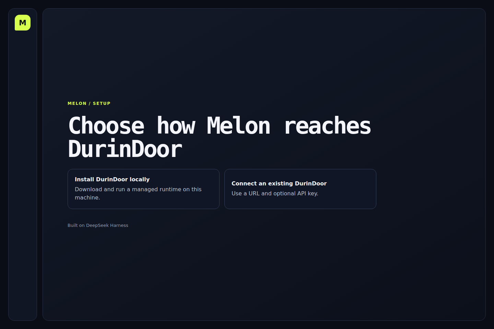
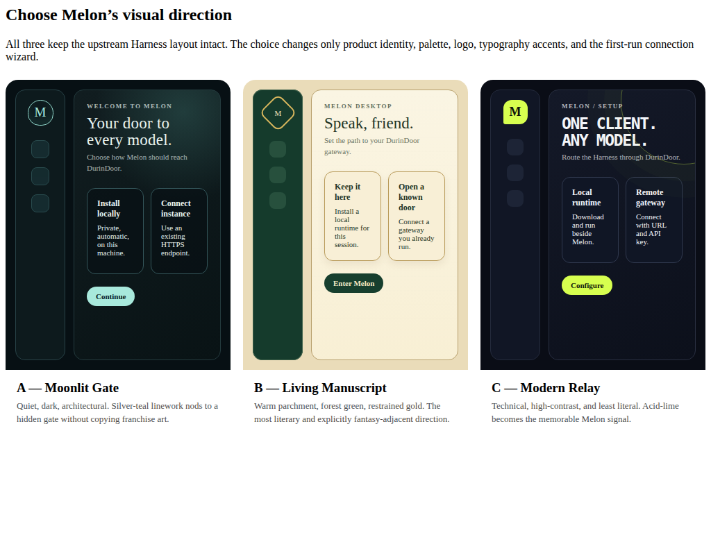
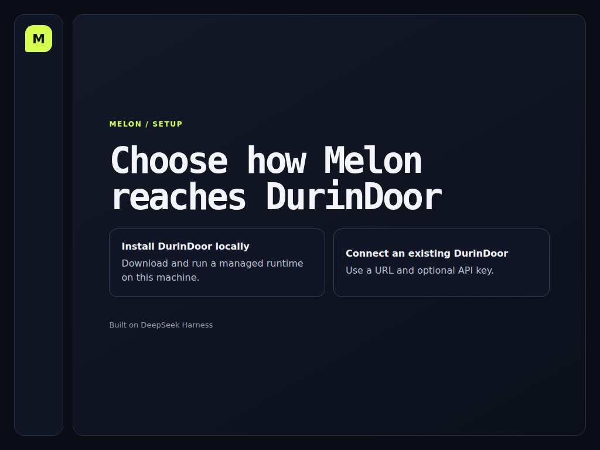
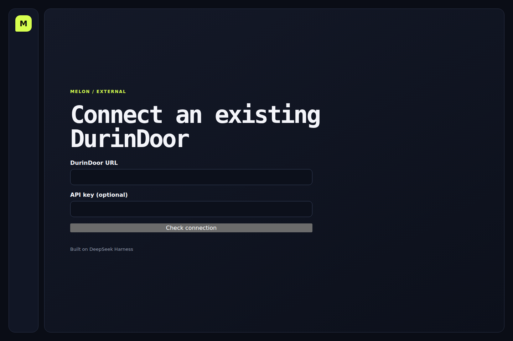
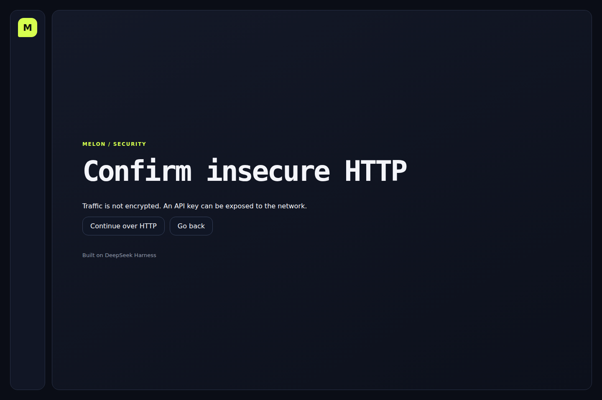

Candidate B — Modern Relay 1440×960

Candidate A — live Vite choice 1440×960

Candidate B — Modern Relay 1024×768

Candidate A — live Vite choice 1024×768

External form 1440×960

Insecure HTTP 1440×960

Latest critic verdict
Round 1, 2026-08-17. Live Vite setup at 127.0.0.1:1420, not a Tauri window. Choice, external, and insecure-HTTP frames exist at 1440×960 and 1024×768. Tokens match Relay (page #0a0d16, panel #111625, lime mark #d7ff4f). Hierarchy matches: rail + lime M, uppercase lime eyebrow, two choice cards, attribution. Not a viewport A/B win. Plan requires the running Tauri app. Vite cannot award the Gauntlet.
Largest remaining gap
Capture the real Tauri setup window (pnpm run melon:dev) at both viewports and run a blind A/B against the checked-in Modern Relay PNGs. Browser daemon was down this round; Chromium headless hit Vite only.
Next active round
Launch Tauri, screenshot choice + external + insecure-HTTP + error at 1440×960 and 1024×768 from the native window, then judge those frames — not this Vite preview.